건축설비기사 (2010-03-07 기출문제)
1과목: 건축일반
1. 건물에서의 열전달에 관련된 용어의 단위 중 옳지 않은 것은?
- 열전도율 : W/(m2ㆍK)
- 대류열전달율 : W/(m2ㆍK)
- 열저항 R : (m2ㆍK)/W
- 열관류율 K : W/(m2ㆍK)
(정답률: 63%)

2. 리조트 호텔(Resort hotel)의 입지 조건과 가장 거리가 먼 것은?
- 기후적인 쾌적도가 높을 것
- 조망 및 주변경관의 조건이 좋을 것
- 상업지와의 교통관계가 편리할 것
- 관광지의 특성을 활용할 수 있는 위치일 것
(정답률: 81%)
3. 기온, 기류 및 주벽면온도의 3요소의 조합과 체감과의 관계를 나타내는 열환경 지표는?
- 유효온도
- 불쾌지수
- 등온지수
- 작용온도
(정답률: 47%)
4. 벽돌쌓기에서 화란식 쌓기의 경우 모서리 부분에 사용되는 벽돌의 마름질 형태는?
- 칠오토막
- 이오토막
- 반토막
- 반반절
(정답률: 69%)
5. 벽돌속에 배관ㆍ배선, 기타용으로 그 층높이의 3/4 이상 연속되는 세로홈을 팔 때, 그 홈의 깊이는 벽두께의 최대 얼마 이하로 하는가?
- 1/2
- 1/3
- 1/4
- 1/5
(정답률: 64%)
6. 아파트의 각 형식에 대한 설명 중 옳은 것은?
- 홀형은 프라이버시가 나쁘나 통행부 면적이 작아서 건물의 이용도가 높다.
- 집중형은 대지이용도가 높고 채광 및 통풍이 용이하다.
- 편복도형은 공용복도에 있어서는 프라이버시가 침해되기 쉽다.
- 중복도형은 프라이버시가 좋으며 조용하다.
(정답률: 86%)
7. 플랫 슬래브(flat slab)에 대한 설명 중 옳지 않은 것은?
- 바닥에 보가 전혀 없이 바닥판만으로 구성한다.
- 하중을 직접 기둥에 전달하는 평판슬래브구조를 말한다.
- 기둥 상부는 깔대기 모양으로 확대하고 그 위에 드롭패널을 설치하거나 계단식으로 2중 보강하여 바닥판을 지지한다.
- 바닥판의 두께가 얇아져 고정하중은 작아지나 실내공간 이용률이 낮다.
(정답률: 65%)
8. 침실의 크기를 결정하는 요소로서 우선 고려하여야 할 것은?
- 사용인원수에 따른 필요기적
- 사용자의 연령
- 사용자의 성별
- 연면적에 따른 크기 결정
(정답률: 55%)
9. 천장의 채광 효과를 얻기 위하여 천청의 위치에 설치하고, 비막이에 좋은 측창의 구조적 장점을 살리기 위하여 연직에 가까운 방향으로 한 창에 의한 채광법으로 주광률 분포의 균일성이 요구되는 곳에 사용되는 것은?
- 측광
- 점광
- 정측광
- 특수채광
(정답률: 72%)
10. 학교운영방식 중 교과교실형(V형)에 대한 설명으로 옳지 않은 것은?
- 모든 교실이 특정교과를 위해서 사용되고 일반교실은 없다.
- 교과목에 필요한 시설의 질을 높일 수 있다.
- 학생들의 이동이 심하므로 동선설계에 유의해야 한다.
- 초등학교 저학년에 대해 가장 권장할 만한 형이다.
(정답률: 75%)
11. 진동 및 방진대책에 관한 설명으로 옳지 않은 것은?
- 방진고무는 압축용보다 인장용으로 사용하면 더욱 효과적이다.
- 진동차단은 가능한 한 진동원에 가까운 위치에서 감쇠시키는 것이 효과적이다.
- 고체 전파음의 속도는 공기음보다 훨씬 빠르고 멀리까지 전해진다.
- 낮은 진동수의 기계류 방진에는 금속 스프링이나 고무재료가 효과적이다.
(정답률: 79%)
12. 철골보와 철근콘크리트 바닥판의 일체화를 위해 사용되는 것은?
- 앵커볼트
- 스터드볼트
- 행거볼트
- 주걱볼트
(정답률: 86%)
13. 백화점에 설치하는 엘리베이터와 에스컬레이터에 대한 설명으로 옳지 않은 것은?
- 엘리베이터는 에스컬레이터에 비하여 소요면적이 크나 승강이 병행되어 경제적이다.
- 에스컬레이터는 상하수송이관으로서 백화점 등에 주로 사용된다.
- 엘리베이터는 에스컬레이터에 비해서 수송이 계속적이지 못하고 수송량도 적은 편이다.
- 에스컬레이터는 설비비가 높아지나 윗층 매장의 활용도 증가로 판매액이 증가되어 설비비를 보충할 수 있다.
(정답률: 76%)
14. 레스토랑의 서비스 방식에 따른 평명형식에 해당하지 않는 것은?
- 셀프 서비스 레스토랑
- 카운터 서비스 레스토랑
- 테이블 서비스 레스토랑
- 페이싱 서비스 레스토랑
(정답률: 84%)
15. 다음 천장구조의 단면에서 ㉮부분의 명칭은?
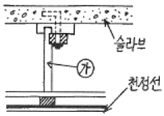
- 달대
- 반자틀받이
- 반자틀
- 달대받이
(정답률: 71%)
16. 잔향시간이란 음원으로부터 발생되는 소리가 정지했을 때 음압레벨이 몇 dB 감쇠하는데 소요되는 시간인가?
- 40dB
- 50dB
- 60dB
- 70dB
(정답률: 74%)
17. 병원의 수술실과 같이 외부 오염공기의 침입을 피하고자 할 때 가장 적합한 환기 방법은?
- 압입식 환기법
- 흡출식 환기법
- 병용식 환기법
- 중력식 환기법
(정답률: 69%)
18. 사무소 건축의 실단위 계획 중 개방식 배치에 대한 설명으로 옳지 않은 것은?
- 개실형에 비해 독립성이 적다.
- 개실형에 비해 내부 공사비가 낮다.
- 방길이에는 변화를 줄 수 있으나, 방 깊이에 변화를 줄 수 없다.
- 개실형에 비해 전체면적을 유효하게 사용할 수 있다.
(정답률: 86%)
19. 연속기초라고도 하며 조적조의 벽기초 또는 철근콘크리트조의 연결기초에 사용되는 것은?
- 줄기초
- 온동기초
- 복합기초
- 독립기초
(정답률: 67%)
20. 다음 중 실내조명 설계순서에서 가장 우선적으로 고려해야 할 사항은?
- 조명방식의 선정
- 소요조도의 결정
- 조명기구의 배치결정
- 조명기구의 선정
(정답률: 76%)
2과목: 위생설비
21. 간접가열식 급탕방식에 대한 설명으로 옳은 것은?
- 고압용 보일러를 설치하여야 한다.
- 난방용 보일러의 열원을 이용할 수 있다.
- 저탕조에는 가열코일을 사용하지 않는다.
- 보일러에 새로운 물이 끊임없이 보급되므로 스케일 부착의 우려가 많다.
(정답률: 63%)
22. 옥외소화전설비의 전동기 또는 내연기관에 따른 펌프를 이용하는 가압송수장치와 관련된 다음의 기준 내용 중 ()안에 알맞은 것은?
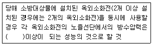
- 0.17 MPa
- 0.20 MPa
- 0.25 MPa
- 0.30 MPa
(정답률: 46%)
23. 옥내소화전의 설치개수가 가장 많은 층의 설치개수가 10개인 어느 건물에서 옥내소화전설비의 수원은 저수량이 최소 얼마이상이 되도록 하여야 하는가?
- 7m3
- 13m3
- 26m3
- 35m3
(정답률: 43%)
24. 급탕설비의 순환배관에서 관마찰저항으로 인한 순환량의 불균등을 방지하기 위한 배관방식은?
- 상향배관방식
- 리버스리턴방식
- 하향배관방식
- 강제순환방식
(정답률: 85%)
25. 원심펌프의 일종으로 날개의 바깥쪽에 가이드 베인(Guide vane)을 설치한 것은?
- 볼류트 펌프
- 터빈 펌프
- 피스톤 펌프
- 기어 펌프
(정답률: 71%)
26. 처리대상인원 1000[인], 1인 1일당 오수량 0.2[m3], 평균 BOD는 200[ppm], BOD 제거율 85[%]인 오수처리시설에서 유출수의 BOD량[kg/day]은?
- 1.5
- 6
- 30
- 200
(정답률: 31%)
27. 배수관의 최소관경에 대한 설명 중 옳지 않은 것은?
- 기구배수관의 관경은 이것에 접속하는 위생기구의 트랩구경 이상으로 한다.
- 배수 수평지관의 관경은 이것에 접속하는 기구배수관의 최대관경 이상으로 한다.
- 배수관은 배수의 유하방향으로 관경을 축소해서는 안된다.
- 지중 또는 지계층의 바닥 밑에 매설하는 배수관의 관경은 32m 이상으로 하는 것이 바람직하다.
(정답률: 63%)
28. LPG 및 LNG에 대한 설명 중 옳지 않은 것은?
- LNG는 주위에서 증발잠열을 빼앗아 기화한다.
- LNG는 천연가스를 -162℃까지 냉각하여 액화시킨 것이다.
- LNG의 비중은 공기보다 크므로 누설되었을 때 하부에 체류하기 쉽다.
- LPG는 일산화탄소를 함유하지 않기 때문에 생가스에 의한 중독의 위험성은 없으나 질실 또는 불완전 연소에 의한 일산화탄소 중독이 가능성이 있다.
(정답률: 73%)
29. 펌프의 서어징(Surging) 현상에 대한 설명 중 옳지 않은 것은?
- 서어징이 발생되면 유량 및 압력이 주기적으로 변동되면서 진동과 소음을 수반한다.
- 펌프의 양정 특성곡선이 산형 특성이고, 그 사용범위가 오른쪽으로 증가하는 특성을 갖는 범위에서 사용하는 경우에 발생할 수 있다.
- 토출배관 중에 수조 또는 공기체류가 있는 경우에 발생할 수 있다.
- 토출량을 조절하는 밸브위치가 수조 또는 공기체류하는 곳보다 상류에 있는 경우에 주로 발생한다.
(정답률: 49%)
30. 터보형 펌프의 비속도에 관한 설명 중 옳지 않은 것은?
- 비속도가 작은 펌프는 양수량이 변화하여도 양정의 변화가 적다.
- 비속도가 작은 펌프는 양정변화가 큰 용도에 적합하여 유량변화가 큰 용도에는 부적합하다.
- 최고양정의 증가비율은 비속도가 증가함에 따라 크게 된다.
- 어느 2종류의 터보형 펌프가 있을 때, 비속도가 동일하다면 펌프의 대소에 관계없이 각각의 펌프가 갖는 회전차는 모두 상사(相似)이다.
(정답률: 52%)
31. 다음 중 모세관 현상에 따른 트랩의 봉수파괴를 방지하기 위한 방법으로 가장 알맞은 것은?
- 트랩을 자주 청소한다.
- 각개 통기관을 설치한다.
- 관내 압력변동을 작게 한다.
- 기구배수관 관경을 트랩구경보다 크게 한다.
(정답률: 74%)
32. 탕의 사용상태가 간헐적이며 일시적으로 사용량이 많은 건물에서 급탕설비의 설계 방법으로 가장 알맞은 것은? (단, 중앙식 급탕방식이며 증기를 열원으로 하는 열교환기 사용)
- 저탕용량을 크게 하고 가열능력도 크게 한다.
- 저탕용량은 크게 하고 가열능력은 작게 한다.
- 저탕용량은 작게 하고 가열능력은 크게 한다.
- 저탕용량을 작게 하고 가열능력도 작게 한다
(정답률: 58%)
33. 최상부위 배수수평관이 배수수직관에 접속된 위치보다도 더욱 위로 배수수직관을 끌어올려 대기 중에 개구하여 통기관으로 사용하는 부분을 의미하는 것은?
- 공용통기관
- 각개통기관
- 회로통기관
- 신정통기관
(정답률: 56%)
34. 압력탱크로부터 수직높이 10[m]되는 곳에 세정밸브(flush valve)식 대변기가 설치되어 있다. 이 대변기에 압력탱크식으로 급수하기 위한 압력탱크의 최저필요압력은? (단, 배관의 연장길이는 15[m]이고 관로의 전마찰손실 수두는 5[mAq]이다.
- 220 kPa
- 270 kPa
- 320 kPa
- 370 kPa
(정답률: 36%)
35. 세정밸브식 대변기의 급수관 관경은 최소 얼마 이상으로 하여야 하는가?
- 20 A
- 25 A
- 30 A
- 40 A
(정답률: 67%)
36. 다음 중 간접배수로 하여야 하는 기구는?
- 세면기
- 욕조
- 대변기
- 세탁기
(정답률: 72%)
37. 위생기구를 유니트화하는 목적과 가장 거리가 먼 것은?
- 현장작업의 증가
- 공기의 단축
- 공정의 단순화
- 노무비 절감
(정답률: 71%)
38. 급배수 설비의 기본 원칙으로 옳지 않은 것은?
- 상수의 급수계통은 크로스 커넥션이 되어서는 안된다.
- 급수계통은 역류나 역사이펀 작용의 위험이 생기지 않도록 한다.
- 우수는 공공하수도에 배수하지 않도록 한다.
- 탱크 및 배수계통에는 통기관 등과 같은 적절한 통기조치를 한다.
(정답률: 79%)
39. 다음 중 초고층 건물의 급수배관법에 대한 설명으로 옳지 않은 것은?
- 급수계통에 조닝(Zoning)이 필요하다.
- 중간수조방식은 수압이 일정하다.
- 중간수조방식은 중간 수조실, 양수펌프 등이 필요하다.
- 강압밸브방식에서는 감압밸브가 고장나더라도 높은 수압이 기구에 작용하지 않는다.
(정답률: 72%)
40. 다음 중 고가수조의 설치 높이를 정하는데 필요한 요소와 가장 관계가 먼 것은?
- 수수조의 저수량
- 급수기구의 소요압력
- 최고높이에 있는 급수기구의 높이
- 배관이 손실압력
(정답률: 49%)
3과목: 공기조화설비
41. 냉각탑이 응축기보다 낮은 위치에 있는 경우 냉각수 펌프가 정지할 때마다 응축기 주변이 극단적인 부압(負壓)이 되지 않도록 설치하는 것은?
- 사이폰 브레이커(syphon breaker)
- 디프 튜브(derp tube)
- 더트 포켓(diry pocket)
- 플래시 탱크(flash tank)
(정답률: 65%)
42. 실내열환경을 조절할 수 있는 수단에는 건축적 방법과 설비적 방법이 있다. 건축적 방법을 강화한 건물이 아닌 것은?
- 생태건축
- 그린빌딩
- 인텔리전트빌딩
- 자연형 태양열 주택
(정답률: 63%)
43. 다음의 공기에 대한 설명 중 옳지 않은 것은?
- 지상 부근 공기의 성분비율은 수증기를 제외하면 거의 일정하다.
- 여러 기체의 혼합물로 산소와 이산화탄소가 가장 많은 부분을 차지한다.
- 수증기를 전혀 함유하지 않은 건조한 공기를 가상하여 건조공기라 부른다.
- 건조공기는 이상기체에 가까운 성질을 갖고 있으므로 이상기체로 간주하여 계산될 수 있다.
(정답률: 70%)
44. 배관설계에 관한 설명으로 옳은 것은?
- 직관부의 마찰저항은 관경에 비례한다.
- 글로브 밸브는 슬루스 밸브에 비해 마찰저항이 적어 지름이 큰 관에 많이 사용한다.
- 관내의 유속이 낮으면 공사비는 절감되나 마찰저항이 커져서 펌프 소요동력이 증가한다.
- 수배관의 관경은 마찰손실선도에서 유량, 단위길이당 마찰손실, 유속 중 2개가 정해지면 결정할 수 있다.
(정답률: 60%)
45. 수관보일러에 대한 설명 중 옳은 것은?
- 지역난방에는 사용할 수 없다.
- 부하변동에 대한 추종성이 높다.
- 사용압력이 연관식보다 낮으며 예열시간이 길다.
- 연관식보다 설치면적이 작고, 초기 투자비가 적게 든다.
(정답률: 36%)
46. 기준면보다 20m 높이에 있는 관내에 물이 압력 60kPa, 유속 3m/s로 흐를 때 이 물의 전수두(m)는? (단, 물의 밀도는 1kg/L이다.)
- 약 18.7
- 약 26.5
- 약 38.7
- 약 83.1
(정답률: 50%)
47. 다음과 같은 조건에서 난방시에 도입 외기량이 500kg/h일 때 도입 외기에 의한 외기부하는?
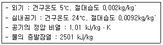
- 5097 W
- 6068 W
- 7418 W
- 9936 W
(정답률: 28%)
48. 다음의 온수난방에 대한 설명 중 옳지 않은 것은?
- 난방부하의 변동에 따른 온도조절이 증기난방에 비해 용이하다.
- 보일러의 취급이 증기난방에 비해 간단하다.
- 예열시간이 짧아 신속히 난방할 수 있다.
- 한냉지에서는 동결의 우려가 있다.
(정답률: 69%)
49. 다음의 공기조화방식 중 전공기방식에 속하지 않는 것은?
- 단일덕트방식
- 팬코일 유니트방식
- 각층 유니트방식
- 멀티존 유니트방식
(정답률: 65%)
50. 다음과 같이 열원의 출구온도는 일정하게 하고 부하변동에 따라 3방밸브로 바이패스에 의한 혼합비를 제어하고 2차 펌프에 의해 부하측인 각 유닛으로 급수하는 부하 기긱의 출력제어방법은?
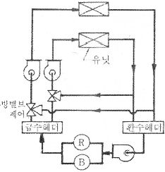
- 변유량 방식
- 정유량 방식
- 존펌프 방식
- 주펌프 방식
(정답률: 52%)
51. 다음 가습방법 중 열수분비가 가장 큰 경우는?
- 증기 가습
- 온수 가습
- 순환수 가습
- 단열 가습
(정답률: 59%)
52. 송풍기의 회전속도를 일정하게 하고 날개의 직경을 d1에서 d2로 변경했을 때, 동력 L2를 구하는 식으로 알맞은 것은? (단, L1은 직경 d1에서의 동력이다.)
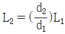
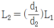
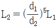
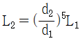
(정답률: 38%)
53. 원형 덕트와 장방형 덕트의 환산식으로 옳은 것은? (단, d : 원형덕의 직경 또는 환산직경, a : 장방형 덕트의 장변길이, d : 장방형 덕트의 단변길이)
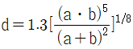
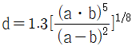
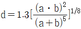
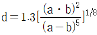
(정답률: 64%)
54. 1개의 실에 설치된 온수용 주철제 방열기의 상당방열면적(EDR)이 20m2일 때 5개실 전체에 동일한 방열기 용량을 설치한다면, 이 때에 필요한 전온수 순환량(L/min)은? (단, 방열기의 표준방열량 0.523kW/m2, 방열기 입구온도 80℃, 출구온도 70℃, 온수비열 4.19J/kgㆍK, 온수의 밀도 1kg/L 이다.)
- 15 L/min
- 21.87 L/min
- 75 L/min
- 108.3 L/min
(정답률: 39%)
55. 열부하 계산 결과, 계산된 송풀량이 너무 적어서 실내 기류가 점체될 가능성이 있기 때문에 보다 많은 송풍량을 고려하여야 하는 장소가 있다. 다음 중 이러한 장소에 해당되지 않는 곳은?
- 극장, 공연장 등 사람이 많이 모이는 곳
- 병원의 수술실 및공장의 클린룸
- 난방시 사무소에 있어서 북쪽 존
- 빌딩 건축의 외부 존
(정답률: 42%)
56. 다음 중 유리창에 의한 일사 냉방부하 산정과 가장 관계가 먼 것은?
- 위도
- 창의 유리 면적
- 차폐의 종류
- 열관류율
(정답률: 54%)
57. 공조기에 있는 냉각코일이 건코일인 경우 다음과 같은 조건에서 냉각열량은?
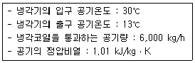
- 26,098 W
- 28,617 W
- 34,402 W
- 142,351 W
(정답률: 38%)
58. 다음과 같은 특징을 갖는 축류형 취출구는?
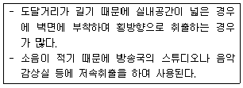
- 아네모스탯형
- 브리즈 라인형
- 팬형
- 노즐형
(정답률: 50%)
59. 공기여과기를 통과하기 전의 오염농도 C1=0.45mg/m3, 통과한 후의 오염농도 C2=0.12mg/m3이다. 이 여과기의 여과효율은?
- 약 35%
- 약 42%
- 약 53%
- 약 73%
(정답률: 57%)
60. 다음 중 스모크타워 배연법에 대한 설명으로 가장 알맞은 것은?
- 부력에 의하여 연기를 실의 상부벽이나 천장에 설치된 개구에서 옥외로 배출하는 방식이다.
- 배연기와 배연풍도를 사용해서 외부로 연기를 배출하는 방식이다.
- 풍력에 의한 흡인효과와 부력을 이용한 배면탑을 사용하여 연기를 배출하는 방식이다.
- 연기를 일정구획 내에 한정하도록 피난이 완전히 끝난 뒤에 개구부를 자동으로 완전밀폐하는 방식이다.
(정답률: 43%)
4과목: 소방 및 전기설비
61. 자동화재탐지설비의 감지기 중 차동식의 성능과 정온식의 성능을 혼합한 것으로 두 성능 중 어느 한 기능이 적동되면 작동신호를 발신하는 감지기는?
- 이온화식 감지기
- 연기 감지기
- 보상식 감지기
- 광전식 감지기
(정답률: 67%)
62. 다음 중 비례적분미분(PID)제어동작으로 제어한 결과 시스템이 불안정하고 진동하였을 경우 이에 대한 원인과 가장 거리가 먼 것은?
- 비례동작의 비례대가 매우 좁다.
- 적분동작의 적분시간이 매우 짧다.
- 미분동작의 미분시간이 매우 길다.
- 낭비시간(dead time)이 매우 짧다.
(정답률: 60%)
63. 3[Ω]의 저항과 4[Ω]의 유도성 리액턴스가 직렬로 연결된 교류 회로에서의 역률은 얼마인가?
- 75%
- 60%
- 90%
- 80%
(정답률: 46%)
64. 라플라스 변환의 정의는?
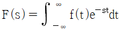
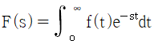
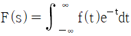
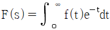
(정답률: 49%)
65. 단권 변압기에서 1차 권선의 권수가 100회, 공통코일(2차 코일) 권수가 60회 일 때 2차측 전압은 얼마인가? (단, 1차측 전압은 100[V] 이다.)
- 40 [V]
- 60 [V]
- 100 [V]
- 160 [V]
(정답률: 57%)
66. 금속관 공사에 대한 설명 중 옳지 않은 것은?
- 외부적 음력에 대한 전선보호에 신뢰성이 높다.
- 콘크리트 슬래브 속의 금속관은 철근콘트리트조의 철근역할을 하여 콘크리트를 구조적으로 안정화 시킨다.
- 옥내의 점검 불가능한 은폐장소로서 습기가 많은 장소에 사용이 가능하다.
- 금속관 배선은 절연전선을 사용하여야 한다.
(정답률: 42%)
67. 대용량의 진상용 콘덴서를 설치하면 고조파 전류에 의하여 회로전압이나 전류파형의 왜곡을 일으킨다. 이러한 문제점을 보완하기 위하여 설치하는 콘덴서 회로의 부속기기는?
- 방전코일
- 직렬리액터(SR)
- 컷 아웃 스위치
- 전력퓨즈
(정답률: 63%)
68. 접속방식에 따라 분류한 인터폰 설비의 종류에 해당하지 않는 것은?
- 모자식
- 상호식
- 동시 동화식
- 복합식
(정답률: 36%)
69. 유효전력이 80[kW], 무효전력이 60[kVar]인 부하의 피상전력은?
- 70 [kVA]
- 100 [kVA]
- 120 [kVA]
- 140 [kVA]
(정답률: 50%)
70. 다음 중 3상 농협 유도전동기의 기동법에 속하지 않는 것은?
- Y-△ 기동법
- 2차 저항법
- 직입 기동법
- 리액터 기동법
(정답률: 46%)
71. 패러드(farad)[F]는 무엇을 나타내는 단위인가?
- 정전용량
- 자속밀도
- 투자율
- 전력
(정답률: 33%)
72. 다음 중 전류의 의미로 가장 알맞은 것은?
- 이종전하간의 흡입
- 동종전하간의 반발
- 자유전자의 이동
- 전하간에 작용하는 힘
(정답률: 72%)
73. 교류의 크기를 나타내는데 있어서 평균치 Va와 최대치 Vm과의 관계는?
- Va=1.11×Vm
- Va=0.707×Vm
- Va=0.637×Vm
- Va=√2×Vm
(정답률: 54%)
74. 액면조절장치의 감지부의 종류 중 액체내의 전극봉 사이의 통전 상태로서 액면을 조절하며, 저수조용으로 사용하는 것은?
- 오뚜기식
- 플로트식
- 기어식
- 전극식
(정답률: 57%)
75. 반도체를 사용한 무접점 시퀀스 제어 회로의 특징으로 옳지 않은 것은?
- 전기적 노이즈나 서어지에 약하다.
- 온도 변화에 약하다.
- 소형화가 불가능하다.
- 동작 속도가 빠르다.
(정답률: 66%)
76. 연기감지기 설치장소로 가장 알맞은 것은?
- 높이 20[m] 이상인 장소
- 부식성 가스가 체류하고 있는 장소
- 주방 등 평시에 연기가 발생하는 장소
- 엘리버이터 권상기실
(정답률: 52%)
77. 4[kΩ]의 저항에 25[mA]의 전류가 흘렀을 때, 가해진 전압은?
- 10 [V]
- 100 [V]
- 240 [V]
- 625 [V]
(정답률: 60%)
78. 물질이 양(+) 또는 음(-)으로 대전(electrification)되어 양전기나 음전기를 가지게 되는 것은 다음 중 무엇의 이동 및 증감에 의한 것인가?
- 원자핵
- 양성자
- 중성자
- 전자
(정답률: 58%)
79. 평균 구면 광도 300[cd]의 전구 20개를 지름 20[m]의 원형방에 점등할 때 조명률 0.5, 보수율 0.67이라 하면 평균조도[lx]는 얼마인가?
- 80.4 [lx]
- 70.2 [lx]
- 60.4 [lx]
- 50.2 [lx]
(정답률: 11%)
80. 3대의 전동기 모두 같은 크기의 전압을 인가하기 위한 결선 방법은?
- 직렬결선
- 병렬결선
- 직렬결선 1회로와 병렬결선 2회로
- 직렬결선 2회로와 병렬결선 1회로
(정답률: 68%)
5과목: 건축설비관계법규
81. 자동화재탐지설비를 설치하여야 하는 특정소방대상물에 속하지 않는 것은?
- 근린생활시설 중 일반목용장으로서 연면적 600제곱미터 이상인 것
- 위락시설로서 연면적 600제곱미터 이상인 것
- 숙박시설로서 연면적 600제곱미터 이상인 것
- 문화집회 및 운동시설로서 연면적 1천제곱미터 이상인 것
(정답률: 48%)
82. 건축물에 설치하는 지하층의 구조 및 설비에 관한 기준 내용으로 옳지 않은 것은?
- 거실의 바닥면적이 50m2 이상인 층에는 직통계단외에 피난층 또는 지상으로 통하는 비상탈출구 및 환기통을 설치할 것
- 바닥면적이 500m2 이상인 층에는 피난층 또는 지상으로 통하는 직통계단을 관련 규정에 의해 방화구획으로 구획되는 각 부부마다 1개소 이상 설치할 것
- 거실의 바닥면적의 합계가 1000m2 이상인 층에는 환기설비를 설치할 것
- 지하층의 바닥면적이 300m2 이상인 층에는 식수공급을 위한 급수전을 1개소 이상 설치할 것
(정답률: 19%)
83. 방염선능기준 이상의 실내장식물 등을 설치하여야 하는 특정소방대상물에 속하지 않는 것은?
- 숙박시설
- 아파트
- 종합병원
- 통신촬영시설 중 방송국 및 촬영소
(정답률: 69%)
84. 다음의 하수도법 상 용어의 정의가 옳지 않은 것은?
- 합류식 하수관거라 함은 오수와 하수도로 유입되는 빗물ㆍ지하수가 함께 흐르도록 하기 위한 하수관거를 말한다.
- 분뇨처리시설이라 함은 분뇨를 침전ㆍ분해 등의 방법으로 처리하는 시설을 말한다.
- 증수도라 함은 건물ㆍ시설 등에서 발생하는 오수를 다시 처리하여 생활용수ㆍ공업용수 등으로 재이용하는 시설을 말한다.
- 공공하수라 함은 지방자치단체가 설치 또는 관리하는 하수도를 말하며, 개인하수도를 포함한다.
(정답률: 50%)
85. 숙박시설의 욕실은 그 바닥으로부터 높이 몇m 까지 안벽의 마감을 내수재료로 하여야 하는가?
- 0.5 m
- 1.0 m
- 1.5 m
- 2.0 m
(정답률: 55%)
86. 공동방화관리자를 선임해야 하는 특정소방대상물에 속하지 않는 것은?
- 복합건축물로서 층수가 5층인 것
- 판매시설 및 영업시설 중 도매시장
- 복합건축물로서 연면적 5,000m2인 것
- 지하층을 포함한 층수가 10층인 건축물
(정답률: 38%)
87. 헬리포트의 설치기준 내용으로 옳은 것은?
- 층수가 10층 이상인 건축물의 옥상에는 헬리포트를 설치하여야 한다.
- 헬리포트의 길이와 너비는 각각 9미터 이상으로 한다.
- 헬리포트의 주위한계선은 백색으로 하되, 그 선의 너비는 38센티미터로 한다.
- 헬리포트의 중심으로부터 반경 15미터 이내에는 이ㆍ착륙에 장애가 되는 건축물ㆍ공작물 또는 난간을 설치하지 아니한다.
(정답률: 56%)
88. 비상용승강기 승강장의 구조와 관련된 기준 내용으로 옳지 않은 것은?
- 채광이 되는 창문이 있거나 예비전원에 의한 조명설비를 할 것
- 노대 또는 외부를 향하여 열 수 있는 창문이나 배연설비를 설치할 것
- 벽 및 반자가 실내에 접하는 부분의 마감재료는 불연재료로 할 것
- 승강장의 바닥면적은 비상용 승강기 1대에 대하여 5제곱미터 이상으로 할 것
(정답률: 60%)
89. 문화집회 및 운동시설로서 전층에 스프링클러 설비를 설치하여야 하는 수용인원 기준은? (단. 사찰ㆍ제실ㆍ사당 및 동식물원은 제외)
- 50인 이상
- 80인 이상
- 100인 이상
- 150인 이상
(정답률: 70%)
90. 계단의 단너비에 관한 기준 내용으로 옳지 않은 것은?
- 문화 및 집회시설 중 공연장의 경우, 계단 및 계단창의 너비는 120cm 이상으로 한다.
- 초등학교의 계단인 경우, 단너비는 26cm 이상으로 한다.
- 중학교의 계단인 경우, 단너비는 26cm 이상으로 한다.
- 판매시설 및 영업시설 중 상점인 경우, 계단 및 계단창의 너비는 90cm 이상으로 한다.
(정답률: 35%)
91. 다음 중 바닥인 경우 내화구조에 해당하지 않는 것은?
- 철근콘크리트조로서 두께가 10센티미터인 것
- 철재로 보강된 콘트리트블럭조ㆍ벽돌조 또는 석조로서 철재에 덮은 콘크리트 블록 등의 두께가 4센티미터인 것
- 철재의 양면을 두께 5센티미터의 철망모르타르로 덮은 것
- 철재의 양면을 두께 6센티미터의 콘크리트로 덮은 것
(정답률: 39%)
92. 건축물의 냉방설비에 대한 설치 및 설계기준에 따른 용어의 정의가 옳지 않은 것은?
- 빙축열식 냉방설비라 함은 심야시간에 얼음을 제조하여 축열조에 저장하였다가 기타시간에 이를 녹여 냉방에 이용하는 냉방설비를 말한다.
- 전체축냉방이라 함은 기타시간에 필요한 냉방열량의 전부를 심야시간에 생산하여 축열조에 저장하였다가 이를 이용하는 냉방방식을 말한다.
- 이용이 가능한 냉열량이라 함은 축열조에 저장된 냉열량 중에서 열손실 등을 차감하고 실제로 냉방에 이용할 수 있는 열량은 말한다.
- 가스를 이용한 냉방방식이라 함은 가스(유류 제외)를 사용하는 압축식 냉동기 및 냉ㆍ온수기, 가스엔진구동열펌프시스템을 말한다.
(정답률: 20%)
93. 건축물의 에너지절약 설계기준에서 건축부문의 권장사항으로 옳지 않은 것은?
- 건축물은 대지의 향, 일조 및 주풍량 등을 고려하여 배치하며, 남향 또는 남동향 배치를 한다.
- 거실의 층고 및 반자 높이는 실의 용도와 기능에 지장을 주지 않는 범위 내에서 가능한 낮게 한다.
- 공동주택의 외기에 접하는 주동의 출입구와 각 세대의 현관은 방풍구조로 한다.
- 건축물 체적에 대한 외피면적의 비 또는 연면적에 대한 외피면적의 비는 가능한 크게 한다.
(정답률: 47%)
94. 태양열을 주된 에너지원으로 이용하는 주택의 건축면적 산정시 기준되는 것은?
- 외벽 중 외측벽의 중심선
- 외벽 중 공간부분의 중심선
- 외벽 중 내측 내력벽의 중심선
- 외벽 전체의 중심선
(정답률: 32%)
95. 각 층의 거실바닥 면적이 1000m2인 10층 백화점에 설치하여야 하는 승용승강기의 최소 대수는? (단, 8인승 승용승강기의 경우)
- 1대
- 2대
- 3대
- 4대
(정답률: 47%)
96. 다음 중 건축법상 용어가 옳게 설명된 것은?
- 건축설비에는 피뢰침, 굴뚝, 국기 게양대, 우편함이 포함된다.
- 대수선은 건축에 포함된다.
- 건축물 안에서 작업의 목적을 위하여 사용되는 방은 거실이 아니다.
- 리모델링이란 건축물의 노후화를 억제하기 위하여 대수선하는 행위만을 말한다.
(정답률: 38%)
97. 건축물의 용도분류 중 숙박시설에 해당되지 않는 것은?
- 수상관광호텔
- 휴양콘드미니엄
- 가족호텔
- 유스호스텔
(정답률: 58%)
98. 다음은 건축물의 에너지절약 설계기준에서 신ㆍ재생에너지설비 부문의 권장사항 중 태양열 급탕/냉난방설비에 관한 내용이다. 옳지 않은 것은?
- 집열기의 효율 향상을 위하여 집열온도가 낮은 제품을 선택하여 사용한다.
- 계절별 부하특성을 고려하여 집열기의 경사각을 결정해야 한다.
- 집열온도가 외기온의 차가 클수록 집열기의 열손실계수값이 큰 집열기를 사용한다.
- 급탕 및 냉난방 설비의 사용시간에 따른 제어를 통해 주간의 설비활용 비율을 높여 축열조의 용량을 축소할 수 있도록 처리해야 한다.
(정답률: 46%)
99. 다음 소방시설 중 피난설비에 속하지 않는 것은?
- 공기호흡기
- 비상조명등
- 완강기
- 제연설비
(정답률: 57%)
100. 특별피난계단의 구조와 관련된 기준 내용으로 옳지 않은 것은?
- 계단실에는 노대 또는 부속실에 접하는 부분외에는 건축물의 내부와 접하는 창문등을 설치하지 아니할 것
- 출입구의 유효너비는 0.9m 이상으로 하고 피난의 방향으로 열 수 있을 것
- 계단실 및 부속실의 실내에 접하는 부분의 마감은 난연재료로 할 것
- 건축물의 내부에서 노대 또는 부속실로 통하는 출입구에는 갑종방화문을 설치 할 것
(정답률: 64%)
열전도율은 단위 면적당 열전달량과 온도차이의 비율로, 물질의 열전도성을 나타내는 값이다. 따라서 단위는 W/(m2ㆍK)이다.
대류열전달율은 유체의 대류 현상에 의한 열전달량과 온도차이의 비율로, 유체의 대류성과 유속에 영향을 받는 값이다. 역시 단위는 W/(m2ㆍK)이다.
열저항 R은 열전달이 일어나는 물체의 두 면 사이의 열저항을 나타내는 값으로, 열전도율의 역수이다. 따라서 단위는 (m2ㆍK)/W이다.
열관류율 K는 열전달이 일어나는 물체의 두 면 사이의 열전도율과 두 면 사이의 두께의 비율로, 열전도성이 높은 물질일수록 값이 크다. 단위는 W/(m2ㆍK)이다.
따라서 옳지 않은 것은 "열전도율 : W/(m2ㆍK)"이 아닌 다른 것이다.